Tableau Session 02: Intermediate Visual Analytics
Learning Goals
By the end of this session, students will be able to:
- Connect Tableau to relational databases (PostgreSQL)
- Combine data using relationships, joins, unions, and blending
- Understand Tableau’s logical and physical data model
- Create calculated fields (row-level vs aggregate)
- Use parameters for interactive analysis
- Apply filters correctly using Tableau’s order of operations
- Build advanced charts (dual-axis, histogram, boxplot, heatmap)
- Design dashboards with interactivity (actions, filters, tooltips)
Overview
This session transitions from basic visual construction to analytical control.
You will learn how Tableau: - Combines data from multiple tables and sources - Calculates values at different levels of detail - Enables interaction through parameters and actions - Supports more sophisticated analytical chart types
By the end of this class, you should be able to model multi-table data correctly, build advanced analytical charts, and create interactive dashboards that respond to user input.
Introduction: From Flat Tables to Analytical Models
In real-world analytics:
- Data rarely exists in a single flat table
- Business questions span multiple entities (customers, orders, products, time)
- Poor data modeling leads to incorrect numbers, not just slow dashboards
Tableau provides several ways to combine data.
Understanding when and why to use each method is essential for trustworthy analysis.
Connecting to Databases
Beyond Excel and CSV files, Tableau connects directly to relational databases.
On Tableau Desktop and Tableau Cloud, you can connect to different databases using built-in connectors. Technically it is not possible to do from Tableau Public, but the next slides will show how to connect to Microsoft SQL Server from Tableau Desktop, and the same connection can be published to Tableau Cloud.
Tableau Desktop Connectors to SQL Server
Tableau Desktop can connect directly to Microsoft SQL Server to support both exploratory analysis and production dashboards.
SQL Server is one of the most common enterprise sources for Tableau because it supports:
- Large datasets and complex schemas
- Stored procedures and views
- Reliable authentication options (Windows / SQL Server)
- Stable performance with extracts or optimized live queries
Why Use a SQL Server Connector?
Connecting Tableau to SQL Server allows you to:
- Query data without exporting to Excel/CSV
- Work with multiple tables (fact + dimensions) using relationships or joins
- Refresh dashboards consistently through extracts or live connections
- Push filtering and aggregation to the database for better performance
- Leverage existing SQL logic in views and stored procedures
- Do all data cleaning, aggregation and modeling in SQL if desired, using Tableau primarily for visualization to optimize performance
Connection Types: Live vs Extract
Tableau supports two connection modes:
Live Connection
A live connection queries SQL Server every time the user interacts with the dashboard.
Use it when: - Data must be up-to-date (near real-time KPIs) - SQL Server performance is strong and stable - Dashboards have well-designed filters and aggregated views
Considerations: - Heavy dashboards can become slow if queries are complex - Performance depends on network and server load - Can cause loading issues if the underlying data model is not optimized
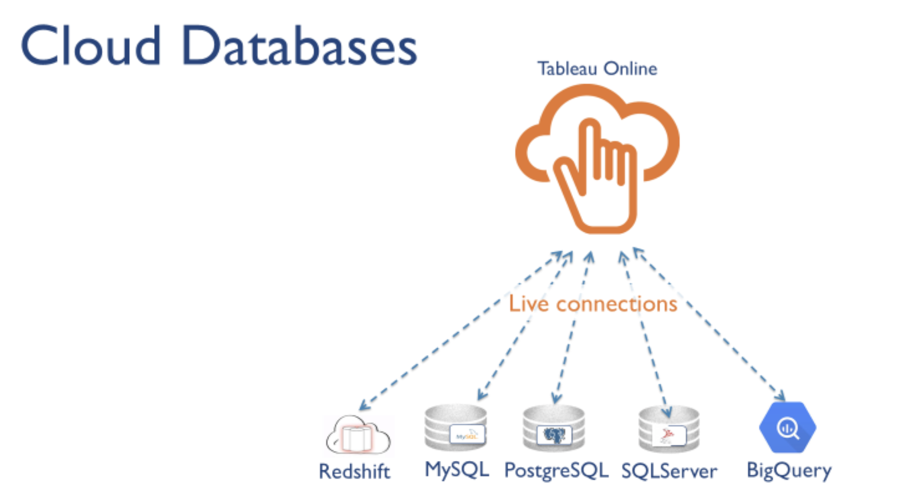
Extract Connection
An extract pulls SQL Server data into a local Tableau extract (.hyper file).
Use it when: - You want fast dashboard performance - Data updates daily/weekly/monthly (not real time) - The dashboard is used by many users or has complex calculations - The analysis don’t require the latest data on every interaction
Considerations: - Data can become outdated between refreshes - Extract refresh requires scheduled jobs in Tableau Server/Cloud (for production) - Extract refreshes should be done taking into account of the SQL table refresh schedule to avoid data staleness
For exploratory and prototyping dashboards, prefer Extract.
For business critical and fast monitoring dashboards where freshness matters, consider Live, but design carefully.
Step-by-Step: Connect Tableau to SQL Server
- Open Tableau Desktop
- On the start page, under Connect, choose:
To a Server → Microsoft SQL Server - Enter connection details:
- Server: SQL Server hostname or IP
- Database: target database name (optional at first)
- Authentication:
- Windows (recommended in corporate environments)
- SQL Server (username/password)
- Windows (recommended in corporate environments)
- Click Sign In
After connecting, Tableau shows the available databases and tables on the Data Source page.
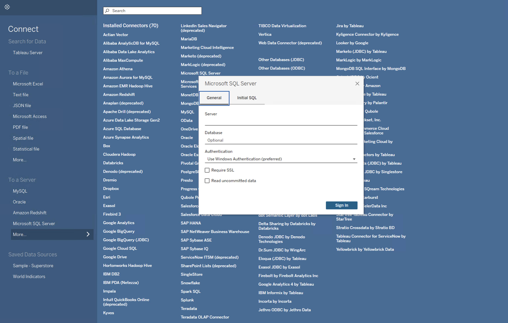
Choosing the Right Objects: Tables, Views, or Stored Procedures
Custom SQL Query
Tableau allows you to write custom SQL queries directly in the connection interface and do all aggregation and modeling in SQL.
Tables
Using raw tables gives you maximum flexibility in Tableau, but it can lead to performance issues and incorrect results if the data model is not designed carefully.
Views
Views are often better when: - Business logic is already defined in SQL
- You want consistent definitions of KPIs
- You want to hide complexity from Tableau
Stored Procedures
Tableau can connect to stored procedures, but behavior depends on how the procedure returns the result set.
Stored procedures are useful when: - The dataset is expensive to compute and already optimized in SQL
- You need parameterized logic inside SQL
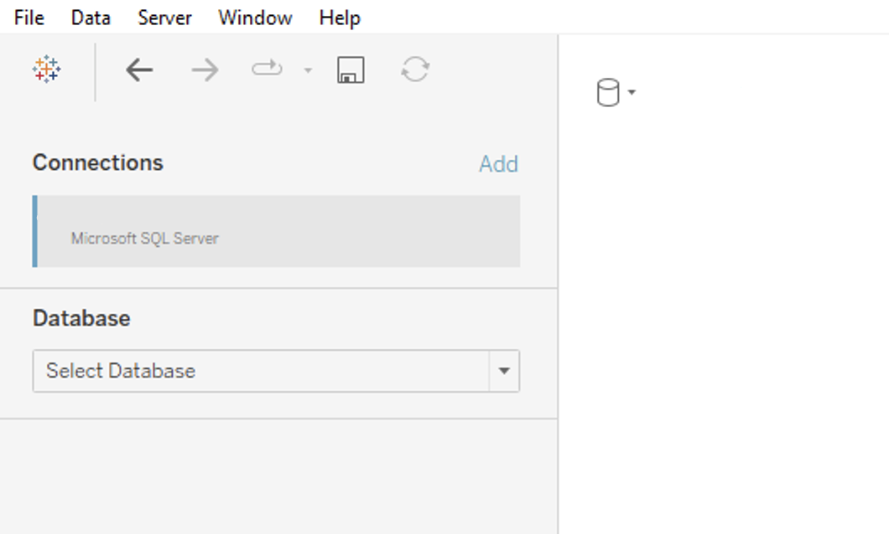
Trusted views or stored procedures are preferable over raw tables.
This reduces duplication of business logic and improves consistency.
Creating Extracts
Extracts can be created on the web or on Tableau Desktop to improve data source performance and support additional analytical functions. When you extract your data source, Tableau copies the data from your remote data store to Tableau Server or Tableau Cloud.

It’s recommended to finalize your data model before you create the extract.
Extract creation may take a long time, and changes to your data model (such as adding new logical tables) can invalidate the extract.
Extract Properties
When creating an extract, you can configure the following properties:

Decide How the Extract Data Should Be Stored
You can choose one of two storage structures (schemas):
- Logical Tables (denormalized schema)
- Physical Tables (normalized schema)
This choice affects how data is stored in the extract—not how tables appear on the Data Source page.
Logical Tables
Logical Tables store data using one extract table per logical table in the data source.
- Physical tables that define a logical table are merged and stored with that logical table.
- If the data source has:
- 1 logical table → stored as 1 extract table
- 3 logical tables → stored as 3 extract tables (one per logical table)
- If the data source has 1 logical table with 3 physical tables → stored as 1 extract table (physical tables are merged)
Physical Tables
Physical Tables store data using one extract table per physical table in the data source.
Select Physical Tables when:
- The extract is comprised of tables combined with one or more equality joins
- Joins performed at query time, not during extract creation
Potential benefits:
- Can improve performance
- Can reduce extract file size
In some cases, this can be used as a workaround for row-level security.
Extract Filters
Select Add to define one or more filters to limit how much data gets extracted based on fields and their values.
Aggregate the Data in the Extract
Select Aggregate data for visible dimensions to aggregate measures using their default aggregation.
Benefits:
- Consolidates rows
- Minimizes extract size
- Improves performance
Optional:
- Select Roll up dates to a specific level (Year, Month, etc.)
Choose the Rows to Extract (Sampling / Top N)
Select the number of rows you want to extract:
- All rows
- Top N rows (where supported)
Notes:
- Tableau applies filters and aggregation first, then extracts the selected number of rows from the results.
- Not all data sources support sampling, so you may not see this option.
- Hidden fields (hidden in Data Source page or Sheet) are excluded from the extract.
Configure Incremental Refresh Settings
Most data sources support incremental refresh.
Instead of rebuilding the entire extract, incremental refresh can:
- Add only the rows that are new since the last extract
- Optionally refresh a recent window of historical data to capture changes
Example:
If the sales data is updated daily, incremental refresh can add only the new daily transactions rather than rebuilding the full extract.
If the structure of the source data changes (e.g., a new column is added), you must do a full refresh before incremental refresh can resume.
Considerations When Refreshing Extracts
Editing an Extract
When editing an existing extract, Tableau shows the last refresh so you can confirm you’re updating the correct extract.
Full Refresh
A Full Refresh replaces all rows in the extract with data from the original source.
- Can take longer
- Can be expensive on the database
Date/Time Precision and Extracts
The Tableau data engine stores time values with precision up to 3 decimal places.
If your database uses higher precision, incremental refresh can create duplicates.
Example:
- Database rows:
2015-03-13 17:30:56.5023522015-03-13 17:30:56.502852
- Tableau stores both as:
2015-03-13 17:30:56.502
This can result in duplicate rows after refresh.
Tableau Data Model

Tableau separates data modeling into two layers, allowing flexibility without sacrificing correctness.
Logical Layer (Relationships)
- Default view in the Data Source page
- Tables remain separate
- Combined dynamically per visualization
- Aggregation-aware
- Prevents row duplication
Physical Layer (Joins & Unions)
- Accessed by double-clicking a logical table
- Tables are merged into a single structure
- Fixed behavior
- Higher risk of duplicated rows
Relationships vs Joins vs Unions vs Blending
Relationships (Recommended)
Relationships connect tables logically, not physically.
Key characteristics: - Tables stay independent - Tableau decides how to query based on the view - Safe for one-to-many and many-to-many relationships - Best for fact + dimension models

Joins
Joins combine tables horizontally using keys.
Join types: - Inner Join returns only records that have matching keys in both tables, excluding any rows that do not exist on both sides. - Left Join keeps all records from the left table and adds matching data from the right table, inserting NULL values when no match exists. - Right Join keeps all records from the right table and adds matching data from the left table, inserting NULL values when no match exists. - Full Outer Join keeps all records from both tables, returning matched rows where possible and NULL values where matches are missing.
Important considerations: - Joins can duplicate rows - Aggregations may inflate if not handled carefully

Unions
Unions combine tables vertically by stacking rows.
Use cases: - Monthly or yearly files - Identical column structure
Rules: - Matching column names and types - Missing columns result in NULLs - Increases rows, not columns

Blending
Blending combines multiple data sources at the visualization level.
Characteristics: - One primary data source - Secondary sources aggregated independently - Joined via common dimensions - Occurs after aggregation

Differences in Action
 |
 |
|
|---|---|---|
| Relationship | Join | Blend |
Note: When using joins, the same row may appear multiple times.
This can inflate aggregated values such as SUM([Order Total]).
Final Data Model for further analysis
 |
|Comparison Summary
| Method | Layer | Adds Rows | Adds Columns | Multiple Sources |
|---|---|---|---|---|
| Relationship | Logical | No | No | No |
| Join | Physical | No | Yes | No |
| Union | Physical | Yes | No | No |
| Blend | Viz-level | No | No | Yes |
Types of Filters
Tableau applies filters in a specific order of operations, which affects both performance and results.
The order is as follows: 1. Extract Filters
2. Data Source Filters
3. Context Filters
4. Dimension Filters
5. Measure Filters
Extract Filters
Extract filters limit data before it is loaded into Tableau.
- Reduce data volume early
- Improve performance
- Apply only to extract-based data sources
Example: - Filter Year = 2023 so only 2023 records are loaded
Data Source Filters
Data source filters restrict data for all users of a data source.
- Applied at the data connection level
- Persist when the data source is published
Example: - [Region] = "West" ensures all users only see West region data

Context Filters
Context filters define the primary filtering context.
- Applied before other dimension and measure filters
- Improve performance in complex dashboards
Example: - Set [Year] = 2023 as a context filter - Then filter [Quarter]
 |
 |
|---|---|
| Year | Quarter |
Dimension Filters
Dimension filters limit categorical fields, such as: - Region - Product Category - Customer Name
Example: - Filter by [Customer Name]
Measure Filters
Measure filters limit aggregated numerical values.
- Order Total
- Quantity
- Unit Price
- Discount
Example: - Filter [Unit Price] >= 100 to focus on high-value purchases

Date Filters
Date filters limit data based on time.
Examples: - Show orders from the last quarter - View orders between Jan 1 and Mar 31, 2023 - Compare Q1 vs Q2 2023 using dashboard filter actions
Top N Filters
Top N filters display only the highest or lowest performers.
Examples: - Top 10 Customers by SUM(OrderTotal) - Bottom 5 Products by Quantity Sold
How to: - Right-click [CustomerName] - Filter → Top → By field → SUM(OrderTotal) → Top 10
Interactive (Quick) Filters
Interactive filters allow dashboard users to control the analysis.
Example: - Right-click [Region] → Show Filter - Choose Dropdown or Single Value List - Users dynamically update views by selecting regions such as “West” or “South”
Tableau Advanced Chart Types
The following advanced chart types allow you to represent multiple datasets using categorical dimensions and numerical measures:
- Area Chart
- Stacked Bar Chart
- Bullet Chart
- Spark Lines
- Bar-In-Bar Chart
- Box Plot
- Pareto Chart
Tableau Area Chart
Purpose
An Area Chart shows the relationship between variables by visualizing cumulative values over time. It highlights both overall trends and category contributions.
Steps to Create an Area Chart
- Drag Order Date to the Columns shelf and set it to Month.
- Drag Customer ID to the Rows shelf, right click and choose Measure to Count(Distinct).
- Change the Marks type to Area.
- Drag City to the Color shelf.

Tableau Stacked Bar Chart
Purpose
A Stacked Bar Chart divides each bar into segments to show category composition while preserving total values.
Steps to Create
- Drag Order Date to the Columns shelf and set it to Year.
- Drag Measure Names to Color.
- Filter Measure Names to keep only Order Total and Refund Amount.
- Drag Measure Values to Rows.
- Change Marks type to Bar.
Enhancement
- Move Measure Names from Detail to Color.
- Drag Measure Values to Label (hold Ctrl).
- Adjust colors and bar size.

Tableau Bullet Chart
Purpose
A Bullet Chart is used to compare an actual value against one or more benchmarks (such as averages, targets, or thresholds) while conserving space.
In this view, the bullet chart compares Category-level Total Quantity against a reference benchmark derived from the overall average quantity.
Business Context
In this example:
- Blue bars represent the actual total quantity per Category
- Background bands represent performance ranges based on the overall average
- Vertical reference lines indicate benchmark values (e.g. average or percentage of average)
This allows quick identification of: - Categories performing below average - Categories performing near or above benchmark - Relative performance without comparing categories directly
Measures Used
Actual value:
SUM([Total Quantity])Benchmark / Reference:
Average of total quantity across all categories
(e.g. 60% of Average Total Quantity = 2,874, as shown in the tooltip)
Steps to Create This Bullet Chart
- Drag Category to the Rows shelf.
- Drag SUM([Total Quantity]) to the Columns shelf.
- Open Show Me and select Bullet Graph.
- Tableau automatically:
- Creates the bullet bar
- Adds a reference line based on aggregation
Customization
- Right-click the axis → Add Reference Line
- Set the reference line to:
- Scope: Entire Table
- Value: Average of
SUM([Total Quantity])
- Scope: Entire Table
- Add additional reference lines or bands using:
- Percent of average (e.g. 60%, 80%, 100%)
- Adjust:
- Bar color (actual values)
- Band opacity (performance ranges)
- Tooltip text for clarity

Tableau Bar-In-Bar Chart
Purpose
A Bar-in-Bar Chart is used to compare two related measures for the same dimension by displaying one bar inside another.
It emphasizes context and relationship rather than ranking.
Typical use cases include: - Returned vs Total Quantity - Actual vs Target - Defective vs Produced Units
Business Context
In this analysis:
- Outer bars (teal) represent Total Quantity by Region
- Inner bars (red) represent Returned Quantity by Region
- Both measures are evaluated within the same category
This allows analysts to quickly identify: - Regions with high return volume - Regions where returns are disproportionately high relative to volume - Differences between absolute volume and problem intensity
Measures and Dimension Used
Dimension:
RegionMeasures:
SUM([Total Quantity])
SUM([Quantity (returns.csv)])
Two Ways to Build a Bar-In-Bar Chart in Tableau
Tableau does not have a native Bar-in-Bar chart type, so there are two common construction methods.
Both are valid — the choice depends on data scale and analytical intent.
Method 2: Dual Measure Axes (Separate Axes)
How it works: - Each measure has its own axis - Bars are aligned by category but scaled independently
Characteristics: - Preserves readability when values differ greatly - Avoids compressing small measures - Focuses on trend comparison, not proportion
Use this when: - Measures differ significantly in size - Accuracy and visibility are more important than proportionality - You want to compare patterns across categories
Limitation: - Part-to-whole relationships are less visually precise - Requires clear labeling to avoid confusion
How to Read a Bar-In-Bar Chart
- The outer bar provides overall context
- The inner bar shows a related or dependent metric
- Large inner bars relative to the outer bar signal potential issues
- Categories should be evaluated independently, not ranked


Tableau Box and Whisker Plot (Whisker Plot)
Purpose
A Box-and-Whisker Plot is used to analyze the distribution of a measure, showing how values are spread, where the typical value lies, and whether outliers exist.
Unlike bar charts, box plots focus on variability and distribution, not totals.
Business Context
In this example, the chart shows the distribution of Discounts across different Regions.
For each Region, the box plot reveals: - Typical discount levels - How widely discounts vary - Whether extreme or unusual discounts occur
This helps answer questions such as: - Which regions apply more aggressive discounting? - Where is discount behavior inconsistent or risky? - Are there outliers that require investigation?
Fields Used
Dimension:
RegionMeasure:
SUM([Discount])Additional Detail:
Individual records shown as points to highlight outliers
How This Chart Is Built
- Drag Region to the Rows shelf.
- Drag SUM([Discount]) to the Columns shelf.
- Open Show Me and select Box-and-Whisker Plot.
- (Optional) Drag a dimension (e.g. Category or Order ID) to Detail to display individual data points.
How to Read a Box-and-Whisker Plot
For each Region:
Median (line inside the box):
The typical discount valueBox (Interquartile Range):
Middle 50% of discount values (from Q1 to Q3)Whiskers:
The range of discounts excluding extreme outliersDots outside whiskers:
Outliers — unusually high or low discounts
Wider boxes indicate greater variability in discounting behavior.
Insights from This View
- Regions with wide boxes apply discounts inconsistently
- Regions with long whiskers have a broad discount range
- Isolated points far from the box indicate exceptional discounts that may require review
- Similar medians but different spreads suggest different pricing strategies

Tableau Dual-Axis Chart
Purpose
A Dual-Axis Chart is used to display two related measures on the same view while allowing each measure to retain its own visual encoding.
It is especially effective for combining absolute values with trend-based or calculated metrics.
Business Context
In this example, the chart analyzes monthly sales performance:
- Blue bars represent the monthly Order Total
- Red line represents a trend-based calculation (e.g. moving sum or running total of Order Total)
- Both measures are aligned by Month of Order Date
This combination allows analysts to: - See month-by-month performance - Understand the overall sales trend - Detect momentum, slowdowns, or seasonal patterns
Fields Used
Dimension:
MONTH([Order Date])Measures:
SUM([Order Total])→ displayed as barsSUM([Order Total])with a table calculation → displayed as a line
How This Chart Is Built
- Drag MONTH([Order Date]) to the Columns shelf.
- Drag SUM([Order Total]) to the Rows shelf (this creates the bar chart).
- Drag SUM([Order Total]) to the Rows shelf a second time.
- On the second measure:
- Change Marks type to Line
- Apply a table calculation (e.g. Moving Sum or Running Total)
- Right-click the second axis and select Dual Axis.
- Synchronize axes if necessary and adjust colors.
How to Read This Dual-Axis Chart
- Bars show the exact sales value for each month
- Line shows the direction and strength of the trend
- Divergence between bars and line indicates:
- Acceleration or deceleration in performance
- Temporary spikes or drops
- Peaks and valleys help identify seasonality
Why Use a Dual-Axis Here
Using a single chart allows: - Trend and volume to be analyzed together - Faster insight compared to separate charts - Better storytelling for time-based performance

Tableau Histogram
Purpose
Histogram is used to analyze the distribution of a continuous numeric variable by grouping values into ranges (bins) and counting how many records fall into each range.
Unlike bar charts, histograms focus on frequency and shape of data, not category comparison.
Business Context
In this example, the histogram shows the distribution of Order Total values.
Each bar represents:
- A range of Order Total values (bin)
- The number of orders that fall within that range
This view helps answer questions such as:
- What is the typical order value range?
- Are most orders small, medium, or large?
- Is the distribution skewed, and in which direction?
- Do extremely large orders exist, and how frequent are they?
Fields Used
Binned Dimension:
Order Total (bin)Measure:
COUNT([Order Total])
Bins group continuous values into equal-sized intervals, making patterns visible.
How This Histogram Is Built
- Right-click Order Total → Create → Bins
- Choose an appropriate bin size (based on data range and analysis goal)
- Drag Order Total (bin) to the Columns shelf
- Drag COUNT([Order Total]) to the Rows shelf
- Set Marks type to Bar
How to Read This Histogram
- X-axis (bins): ranges of Order Total values
- Y-axis: number of orders in each range
- Taller bars indicate more frequent order values
- Short bars at the far right indicate rare, high-value orders
In this chart, the distribution is right-skewed, meaning: - Most orders have relatively low Order Totals - A small number of orders have very high values
Insights from This View
- The majority of orders cluster in lower value bins
- High-value orders exist but are infrequent
- Average Order Total may be pulled upward by extreme values
- Median Order Total is likely a better representation of a typical order

Tableau Heatmap
Purpose
A Heatmap is used to compare magnitude and intensity across two categorical dimensions using color.
It is especially effective for identifying patterns, clusters, and anomalies that are hard to see in bar or line charts.
Business Context (This Chart)
In this example, the heatmap shows Order Total performance by City across Years.
- Rows: City
- Columns: Year of Order Date
- Color intensity:
SUM([Order Total])
Each cell represents the total order value for a given City–Year combination.
This view helps answer questions such as: - Which cities consistently generate higher revenue? - How does city performance change year over year? - Are there cities with growth, decline, or volatility over time?
Fields Used
Row Dimension:
CityColumn Dimension:
YEAR([Order Date])Measure (Color):
SUM([Order Total])
Color encodes magnitude, allowing fast comparison across the grid.
How This Heatmap Is Built
- Drag City to the Rows shelf.
- Drag YEAR([Order Date]) to the Columns shelf.
- Drag SUM([Order Total]) to Color on the Marks card.
- Set Marks type to Square (or Automatic).
- Adjust the color palette to:
- Light colors → lower values
- Dark colors → higher values
- Light colors → lower values
How to Read This Heatmap
- Darker cells indicate higher total order value
- Lighter cells indicate lower total order value
- Scan horizontally to see how a city changes over time
- Scan vertically to compare cities within the same year
Patterns emerge quickly: - Consistently dark rows → strong-performing cities - Sudden color changes → growth or decline - Uneven intensity → volatility
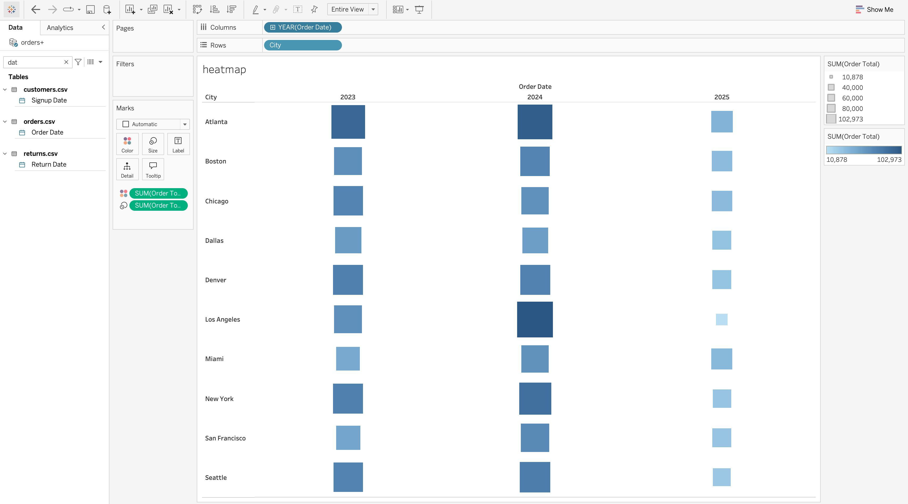
Tableau Highlight Table
Purpose
A Highlight Table combines the structure of a table with color encoding to show magnitude, allowing users to see exact values while still perceiving patterns and intensity.
It is best used when both comparison and precision are required.
Business Context (This Chart)
In this example, the highlight table shows Order Total by City and Year.
- Rows: City
- Columns: Year of Order Date
- Color + Label:
SUM([Order Total])
Each cell displays: - The exact Order Total value - A color intensity indicating relative magnitude
This view helps answer questions such as: - Which cities generated the highest revenue each year? - How does revenue change year over year for each city? - Which cities experienced growth or decline?
Fields Used
Row Dimension:
CityColumn Dimension:
YEAR([Order Date])Measure:
SUM([Order Total])
(used for both Color and Label)
How This Highlight Table Is Built
- Drag City to the Rows shelf.
- Drag YEAR([Order Date]) to the Columns shelf.
- Drag SUM([Order Total]) to Color on the Marks card.
- Drag SUM([Order Total]) to Label on the Marks card.
- Set Marks type to Square.
- Adjust the color palette to reflect low → high values.
How to Read a Highlight Table
- Darker cells indicate higher Order Totals
- Lighter cells indicate lower Order Totals
- Scan across a row to evaluate a city’s performance over time
- Scan down a column to compare cities within the same year
- Labels provide exact values for precise comparison
Insights from This View
- Cities with consistently dark cells are top revenue contributors
- Sudden color changes highlight growth or decline
- Comparing years side by side makes trends immediately visible
- Unlike heatmaps, this view supports exact numeric reporting
Highlight Table vs Heatmap
| Feature | Highlight Table | Heatmap |
|---|---|---|
| Shows exact values | ✅ Yes | ❌ No |
| Emphasizes patterns | ✅ Yes | ✅ Yes |
| Best for dashboards | Reporting + Analysis | Pattern discovery |
| Precision | High | Low |
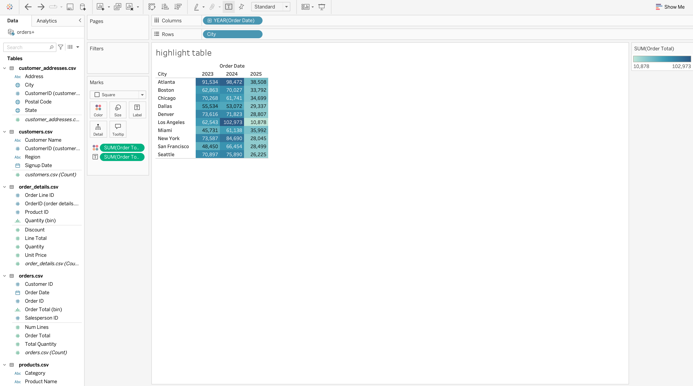
Tableau Treemap
Purpose
A Treemap is used to visualize part-to-whole relationships across hierarchical dimensions using area and color.
It is especially effective when you need to compare many categories at once and understand relative contribution.
Business Context
In this example, the treemap shows the distribution of unique customers across States and Cities.
- Hierarchy: State → City
- Size:
COUNTD([Customer ID])
- Color intensity:
COUNTD([Customer ID])
Each rectangle represents a City, grouped within its State, where: - Larger areas indicate more unique customers - Darker colors indicate higher customer concentration
This view helps answer questions such as: - Which states contribute the largest share of customers? - Which cities dominate within each state? - Is customer distribution concentrated or fragmented geographically?
Fields Used
- Hierarchical Dimensions:
State
City
- Measure:
COUNTD([Customer ID])
The distinct count ensures each customer is counted once, avoiding duplication.
How This Treemap Is Built
- Drag State to Label (or first level in hierarchy).
- Drag City to Label (nested under State).
- Drag
COUNTD([Customer ID])to Size.
- Drag
COUNTD([Customer ID])to Color.
- Set Marks type to Treemap.
- Drag
COUNTD([Customer ID])to Label, right-click choose quick table qalqulations → percent of total.
How to Read This Treemap
- Large rectangles represent cities with many customers
- Small rectangles represent cities with fewer customers
- Cities are visually grouped by State
- Percent labels show relative contribution to the total customer base
Scan the chart to quickly identify: - Dominant cities within a state - States with diversified vs concentrated customer bases - Cities that may warrant targeted marketing or expansion
Insights from This View
- A few cities contribute a disproportionately large share of customers
- Some states show balanced city distribution, others are city-dominated
- Customer concentration patterns may reflect:
- Population density
- Market maturity
- Sales coverage or logistics reach
Treemaps are ideal for high-level composition analysis, not exact comparison.
When to Use (and When Not to Use) a Treemap
Use a Treemap when: - You need to show part-to-whole relationships - Categories are many and hierarchical - Relative importance matters more than precision
Avoid Treemaps when: - Exact value comparison is required - Only a few categories exist (use bars instead) - Small differences must be detected precisely
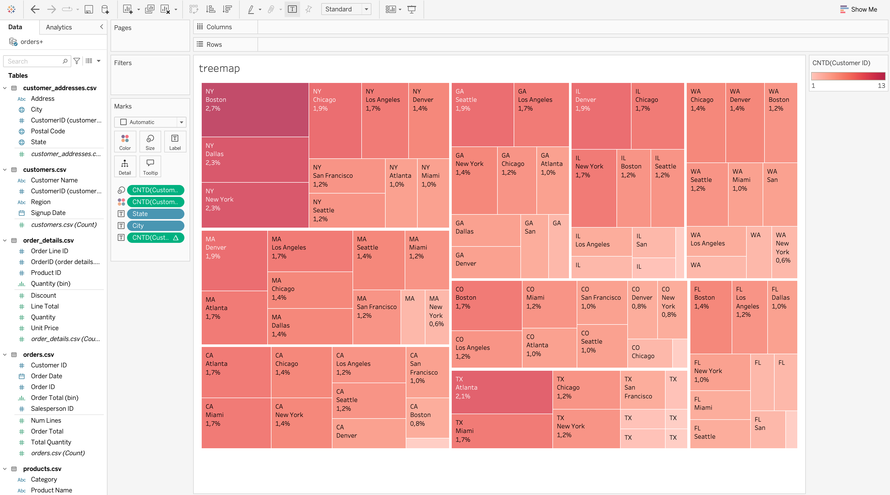
Calculated Fields (Row-Level vs Aggregate)
Calculated fields allow you to create new logic from existing data.
They are one of the most powerful features in Tableau and are used to control how data is classified, transformed, and analyzed.
Why Use Calculated Fields?
Calculated fields can be used to:
- Segment data into meaningful groups
- Convert or standardize data types (e.g. text to date)
- Create new metrics from existing fields
- Filter or conditionally include data
- Calculate ratios, percentages, or performance indicators
In practice, calculated fields help translate raw data into analytical insight.
Types of Calculations in Tableau
Tableau supports three main types of calculations.
The choice depends on when and at what level the calculation should be evaluated.
1. Basic Calculations
Basic calculations operate either at:
- Row level (before aggregation), or
- Aggregate level (after aggregation in the view)
They are the most commonly used calculation type.
Examples: - Categorizing orders as High / Low value
- Calculating revenue per unit
- Applying conditional logic using IF, IIF, or CASE
Basic calculations adapt automatically to the level of detail of the visualization.
2. Level of Detail (LOD) Expressions
LOD expressions provide explicit control over granularity, independent of the view.
They allow you to calculate values at: - A more detailed level → INCLUDE - A less detailed level → EXCLUDE - A fixed level, regardless of the view → FIXED
LOD expressions are especially useful when: - You need consistent results across different views - Aggregation changes would otherwise distort calculations
LOD calculations can be evaluated before or after aggregation, depending on their type.
3. Table Calculations
Table calculations operate only on the results shown in the view.
Key characteristics: - Calculated after aggregation - Depend on the structure of the visualization - Recalculate when the layout of the view changes
Examples: - Running totals
- Moving averages
- Percent of total
- Rank
Table calculations are ideal for trend and comparison analysis, not data modeling.
Choosing the Right Calculation Type
| Question | Recommended Calculation |
|---|---|
| Does this depend on individual rows? | Basic (Row-Level) |
| Should this ignore the view’s granularity? | LOD Expression |
| Does this depend on what’s visible in the view? | Table Calculation |
The calculation type you choose directly affects accuracy and interpretation.
Creating a Calculated Field
Once the calculation type is clear, you can create a calculated field:
- Go to Analysis → Create Calculated Field
- Enter a meaningful name
- Write the calculation logic
- Validate and save
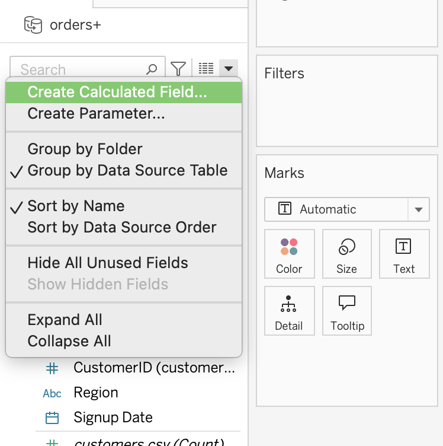
Example: Order Line Revenue
[Quantity] * [Unit Price]
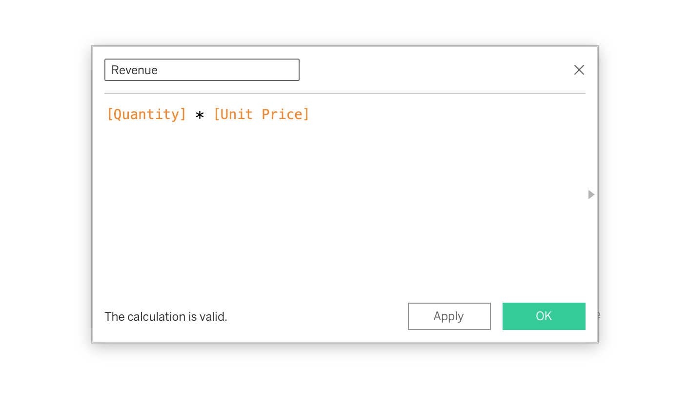
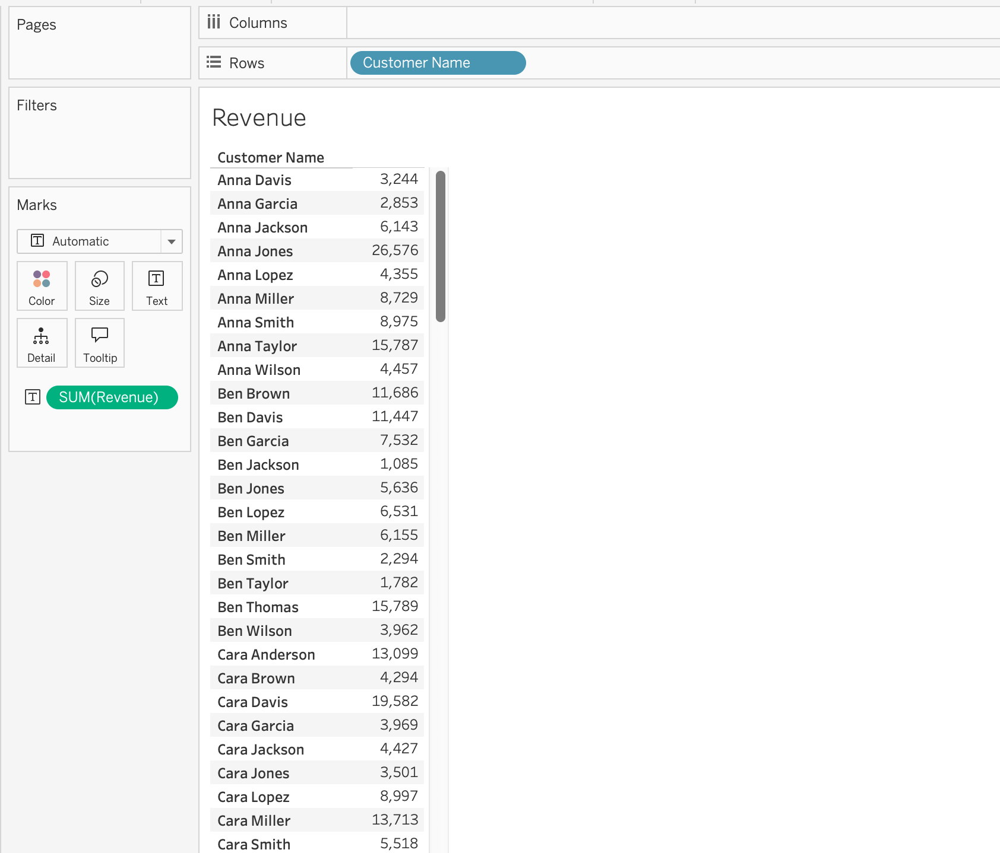
Aggregate Calculations
Aggregate calculations are evaluated after data is grouped based on the dimensions present in the view.
They are used when results should change with: - Dimensions in the view
- Filters and context filters
Example: Average Order Value
SUM([Order Total]) / COUNTD([Order ID])
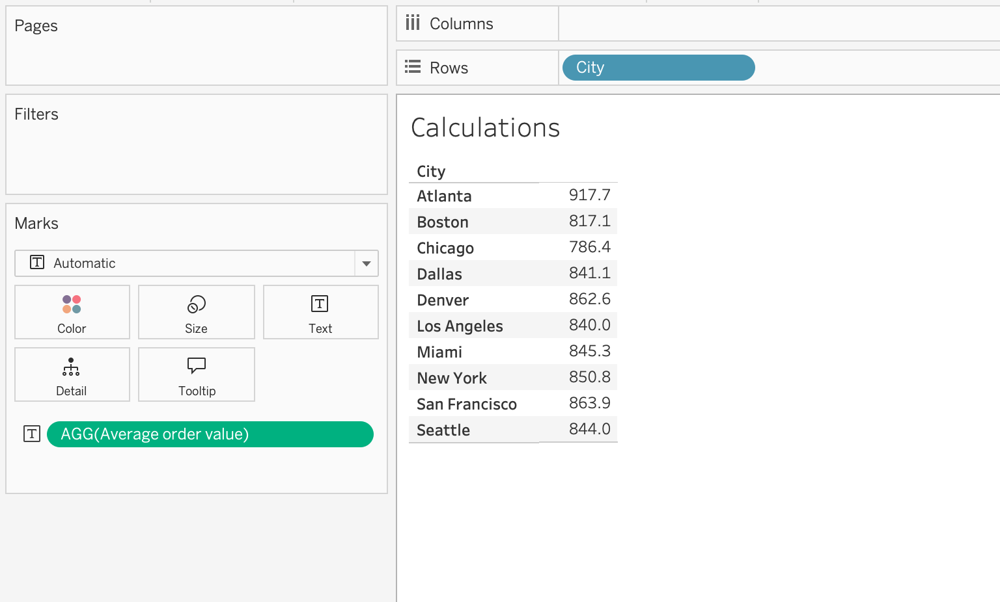
Changing the view (for example, adding Region or Year) will change the result of an aggregate calculation.
Level of Detail (LOD) Expressions
LOD expressions allow you to explicitly control calculation granularity, independent of the visualization.
FIXED — Ignore the View
FIXED calculations compute values at a specific level, regardless of the dimensions present in the view.
Example: Customer Lifetime Value
{ FIXED [Customer ID] : SUM([Order Total]) }
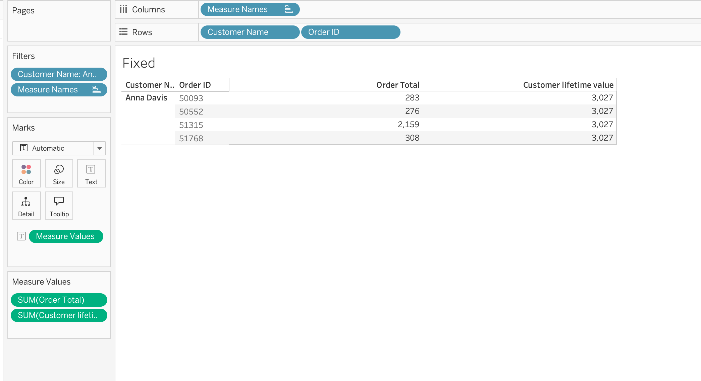
Example: Minimum Order Date per Customer
{ FIXED [Customer ID] : MIN([Order Date]) }

Use FIXED when: - A value must remain stable across different views
- You need customer-, product-, or order-level metrics
INCLUDE — Add Granularity
INCLUDE calculations add additional detail to the calculation, even if that detail is not displayed in the view.
Example: Average Sales by Region-Year
{ INCLUDE [Region] : AVG([Order Total]) }
AVG([Order Total]) would give us the average sales per year, but with INCLUDE we can calculate the average sales per region and then aggregate it at the year level, even if region is not in the view.
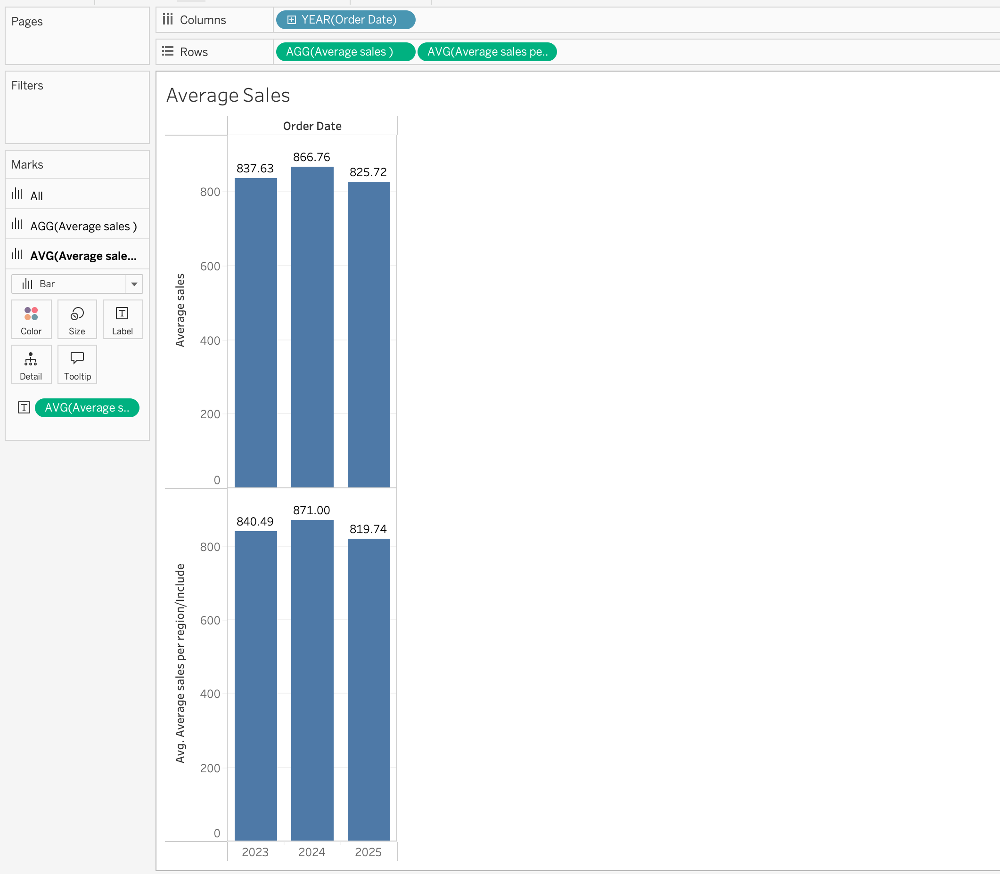
As you can see, the average sales by year is different when we include region in the calculation, because it calculates the average sales per region and then averages those values at the year level, rather than averaging all sales together.
Use INCLUDE when:
- You need more granular logic than the view displays
- The calculation should still respond to filters
EXCLUDE — Remove Granularity
EXCLUDE calculations remove a dimension from the calculation, even if it exists in the view.
Example: Sales Ignoring Category
{ EXCLUDE [Region] : AVG([Order Total]) }
Using EXCLUDE in LOD Expressions
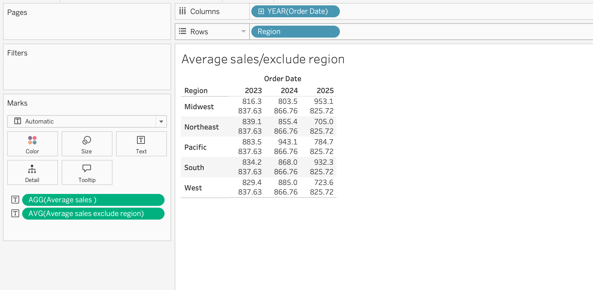
Use EXCLUDE when:
- A dimension is required for display
- But should not affect aggregation logic
EXCLUDE removes a dimension from the level of detail calculation, even if it appears in the view.
Differences in action

Conclusion:
As we can see in the view we have cantegory Region, dimension Year and the following calculations as measures:
AVG([Order Total])→ gives us the average sales per year for each region{ INCLUDE [Region] : AVG([Order Total]) }→ gives us the average sales per region and then averages those values at the year level. That’s why we have the same value in the first and second columns as the category for aggregation is the same.{ EXCLUDE [Region] : AVG([Order Total]) }→ gives us the average sales per year, ignoring the region dimension. That’s why we have the same value for all the regions.{ FIXED [Region] : AVG([Order Total]) }→ gives us the average sales per region, regardless of the year dimension in the view. That’s why we have different values for each region, but they are the same across years.
Table Calculations
Table calculations are evaluated after aggregation and depend entirely on the structure and order of the view.
They are ideal for:
- Trends
- Comparisons
- Sequential analysis
Why Table Calculations Are Sensitive to Layout
Table calculations are computed based on the visible data in the view.
This means they depend on:
- The fields placed on Rows and Columns
- The sorting order
- The addressing and partitioning settings
- Applied filters (especially dimension filters)
Because of this, modifying the view can completely change the result.
Partitioning and Addressing in Table Calculations
When you add a table calculation, you must account for all dimensions in the level of detail.
Each dimension must be used either for:
- Partitioning (scoping), or
- Addressing (direction)
Partitioning Fields (Scope)
Partitioning fields define how the data is grouped before the table calculation is applied.
- They break the view into multiple sub-tables (partitions)
- The table calculation is performed separately within each partition
- They determine the scope of the calculation
In other words, partitioning controls where the calculation resets.
Addressing Fields (Direction)
Addressing fields define how the calculation moves within each partition.
- They determine the direction of the calculation
- They control the sequence of marks used in calculations such as:
- Running totals
- Differences between values
- Percent change
- Running totals
In short, addressing controls how the calculation progresses.
How Partitioning and Addressing Work Together
- Partitioning fields split the view into multiple sub-views (sub-tables).
- The table calculation is applied independently inside each partition.
- The addressing fields determine the direction in which the calculation moves through the marks within each partition.
For example:
- In a running total, addressing determines the order of accumulation.
- In a difference calculation, addressing determines which value is compared to which.
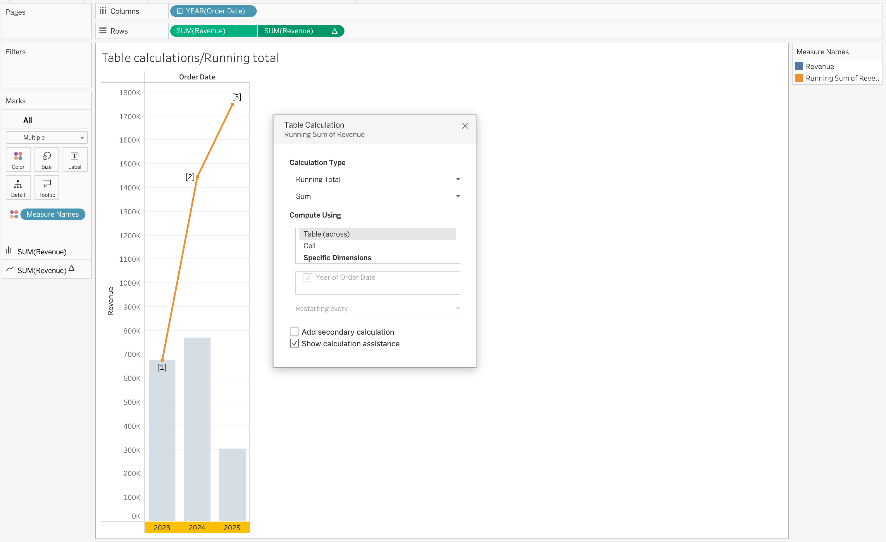

Specific Dimensions vs Compute Using
When using Compute Using options, Tableau automatically assigns some dimensions as:
- Partitioning fields
- Addressing fields
However, when selecting Specific Dimensions, you must manually decide:
- Which dimensions define the partition (scope)
- Which dimensions define the addressing (direction)
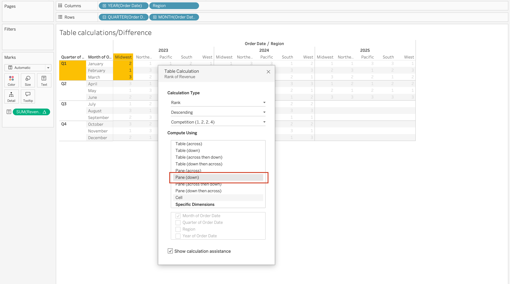

In the Specific Dimensions section of the Table Calculation dialog:
- The order of fields determines the direction of movement through the marks:
Pane (Down) - Checked dimensions define how Tableau computes the table calculation across the view:
Year of Order Date,Region.
A helpful mental model:
- Partitioning = Where does the calculation reset?
- Addressing = In what order does it move?
Understanding this distinction is essential for correctly configuring running totals, rankings, percent differences, and other table calculations.
More Examples of Table Calculations
Using Table Calculations on Marks card fields
When you place a table calculation on the Marks card Color, the table will be colored based on the Measure you have on the view SUM(Revenue) and the table calculation you have on the Color SUM(Total Quantity) will color the Revenue values based on the quantity values.
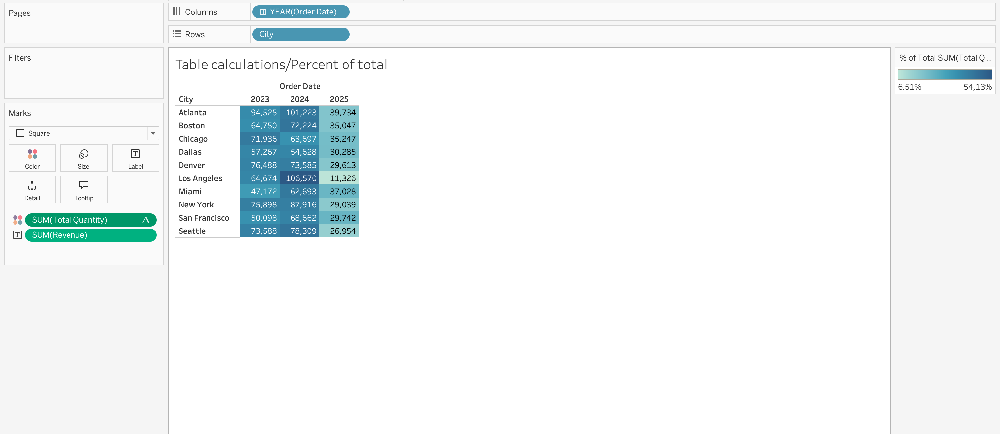
Year over year growth is another common use case for table calculations on the Marks card. For example, if you have SUM(Revenue) on the view and you add a table calculation that calculates the year-over-year growth of Revenue by Region.
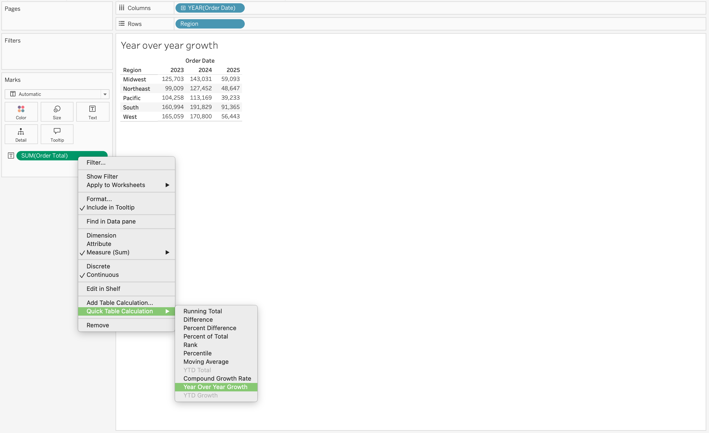
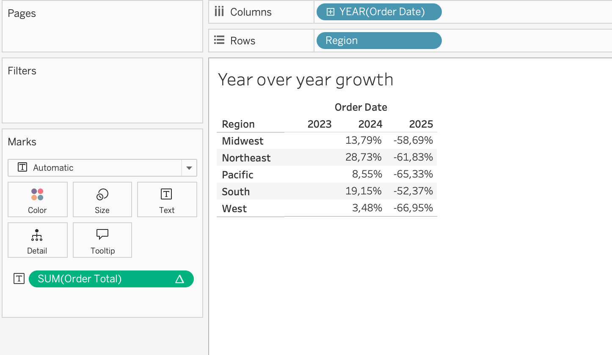
Using Table Calculations on Rows or Columns fields
When you place a table calculation on the Rows or Columns shelf, the table will be calculated based on the Measure you have on the view SUM(Revenue) and the table calculation you have on the Rows or Columns Moving Average will add a moving average line to the view based on the Revenue values.

When you place a table calculation on the Filters shelf, the table will be filtered based on the Measure you have on the view SUM(Revenue) and the table calculation you have on the Filters Rank will filter the view to show only the top N values based on the Revenue values.
Influence of Filters, Parameters, and Context Filters on Calculated Fields
Understanding how filters and parameters interact with calculated fields is critical for building accurate dashboards in Tableau.
The Impact of Filters and Parameters on Calculated Fields
Filters can change the result of calculated fields depending on where they are applied in the order of operations.
Dimension Filters
Dimension filters are applied after FIXED LOD expressions but before table calculations.
This means:
- They do NOT affect FIXED calculations
- They DO affect INCLUDE / EXCLUDE
- They DO affect table calculations
Example:
{FIXED [Customer ID] : SUM([Sales]) }
If you filter by Region (dimension filter), this FIXED value will not change.
Measure Filters
Measure filters are applied after aggregation.
They affect:
- Table calculations
- Aggregated results
- Visual output
They do not recompute FIXED LOD expressions.
Context Filters
Context filters change the order of operations.
When you add a filter to Context, Tableau processes it earlier in the pipeline.
This means:
- Context filters DO affect FIXED LOD expressions
- They create a temporary data subset
- Other filters are applied after the context filter
Example
{ FIXED [Customer ID] : SUM([Sales]) }
If Region is placed in Context, the FIXED result will now be calculated only for the selected Region.
When to Use Context Filters
Use context filters when:
- You need a FIXED LOD to respect a filter
- You want to improve performance with large datasets
- You need dependent filters
Parameters
Parameters behave differently from filters.
- Parameters do NOT filter data automatically
- They must be used inside calculated fields
- They do NOT follow order of operations
- They do NOT affect LOD expressions unless referenced
Example
IF [Sales] > [Sales Threshold Parameter] THEN "High" ELSE "Low" END
IF [Sales] > [Sales Threshold Parameter] THEN "High" ELSE "Low" END The parameter value controls logic dynamically.
Filters and Table Calculations
Table calculations are applied after dimension and measure filters.
They are influenced by:
- Sorting
- Layout
- Visible data
- Filters applied to the view
Parameters
Parameters are not filters and do not automatically affect calculated fields. They must be explicitly referenced in calculations to have an effect. A parameter is a workbook variable (number, date, or string) that can replace a constant value in:
- A calculation
- A filter
- A reference line
Parameters allow you to make dashboards dynamic and interactive.
To Use a Parameter, You Must:
- Create the parameter
- Use it in a calculation, filter, or reference line
- Provide a way to change its value
If users cannot modify the parameter value, it does not provide value.
Cases where parameters are used
Metric Swapping
One of Tableau’s most common forms of parameter usage is inside of calculated fields. This is beneficial if there are several different metrics and want to allow a dashboard end-user change the metrics in the view.
To start choose Create Parameter from the Data Pane and create a parameter with the following properties:


You can then call this parameter in a calculated field using a case statement:
CASE [Metric]
WHEN 1 THEN SUM([Revenue])
ELSE SUM([Quantity])
END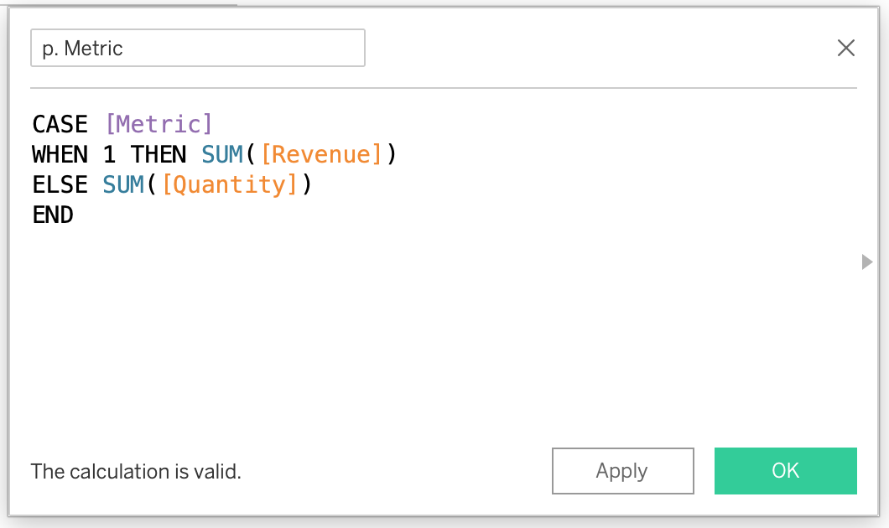
Name of the calculated field should be identical to the parameter name and can include p. in the name to make it clear that it is a calculation for the parameter. This is a common convention to make it clear that the calculation is related to the parameter.
Right cick to the parameter and choose Show Parameter, drag p.Metric and [Order Date] to the view and you will see that the values in the view change based on the value of the parameter.
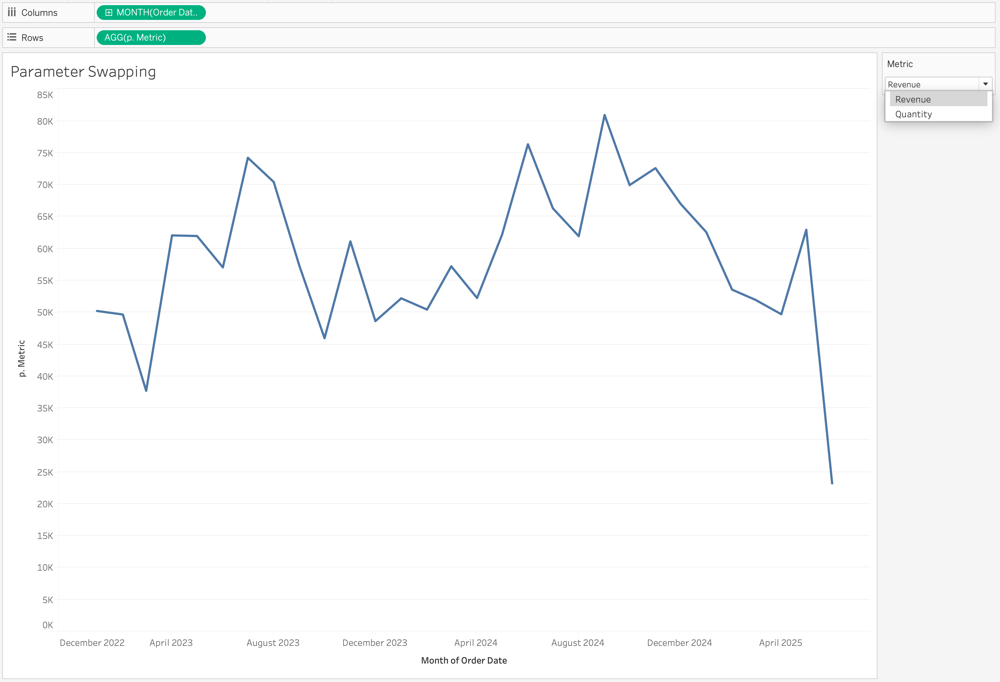
Dimension Swapping
Like the first example, you can also use parameters in calculated fields to return strings and dates, not just numeric values.
In this example parameter allows swapping between Categories [State] and [Region].

The calculation:
CASE [Location Category]
WHEN 'State' THEN [State]
ELSE [City]
END
Drag p.Location Category to the existing view, Rows shelf. Play around with the parameter to see it changes between the two different dimensions.

Boolean Parameters
Parameters can also be used to return boolean values (True/False) which can be used in calculated fields to control logic. For example, you can create a parameter that allows users to toggle between showing or customers who are from the state Florida.

The calculation:
IF [Is Florida] THEN
[State] = 'FL'
ELSE
[State] <> 'FL'
END
This calculation will return TRUE only for records where the state is Florida when the parameter is set to 1 and others when the parameter is set to 0. Drag this calculation to the Filters shelf and set it to True to filter the view based on the parameter value.

Parameters in Filtering
Another use case for parameters is to control the view by allowing users to select Top N customers based on their revenue.
To do this, create a parameter with the following properties:

Then, drag [Customer Name] to the view and SUM([Revenue]) to the Marks card. Right click on the [Customer Name] field on the view and choose Filter and then choose the Top tab. Choose By Field and then by choose the parameter you just created Top values. Choose the aggregation Sum and the field Revenue.
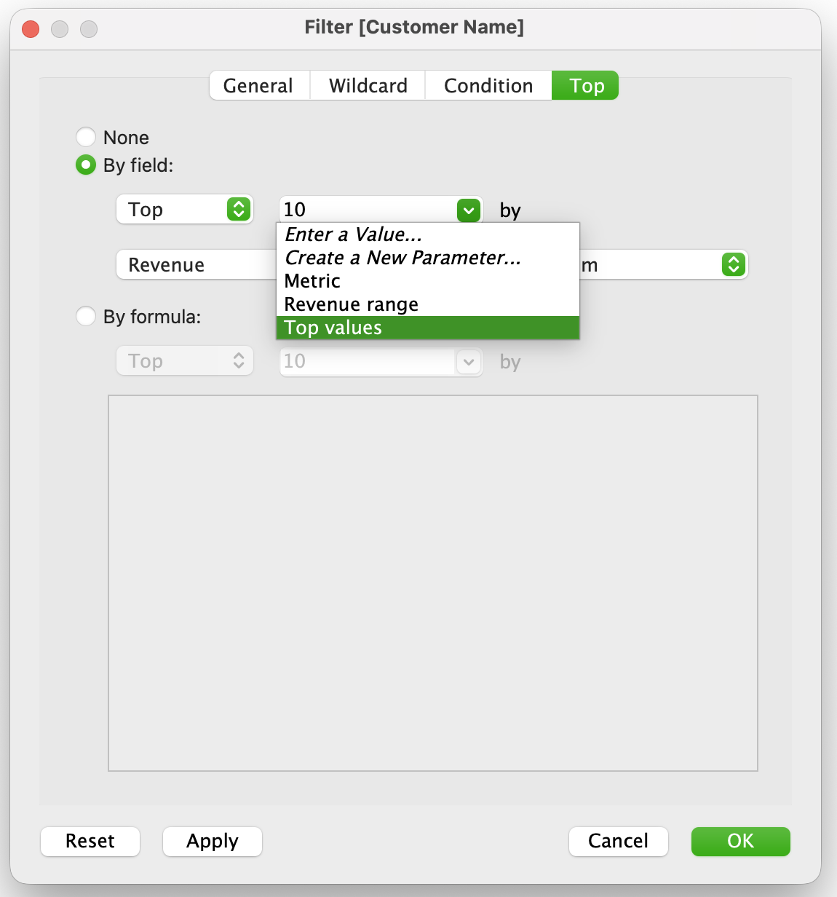
This will allow users to toggle between showing the top N customers and all customers based on their revenue.
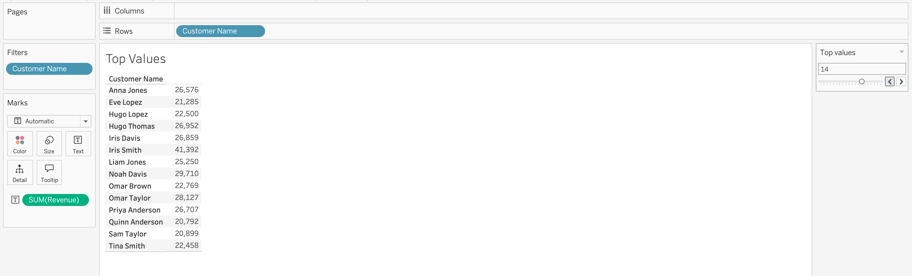
Parameters in Date Calculations
In Date calculations, parameters can be used to allow users to select a date range or a specific date to filter the view. For example, you can create a parameter that allows users to filter the view in a specific date range based on date column.
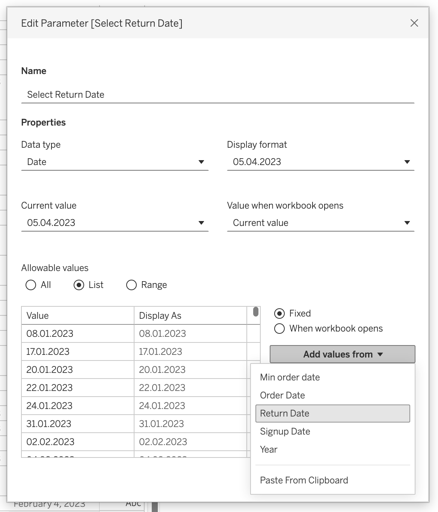
By clicking Add values from we can select the column which should be used for filter values, in our case that is [Return Date].
The calculation:
[Order Date] <= [Select Return Date]
Drag the calculated field to the Filters Shelf and set it to TRUE.
Add the following fields to the Rows shelf: - [Order ID] - DAY([Order Date]) - DAY([Return Date])
The view will display the orders placed before the selected refund date, along with their corresponding order dates.

You can set the difault value of the date parameter to a specific date or to a dynamic value such as TODAY() for live data or MAX([ORDER DATE]) for the extract data to always show data up to the current date when the dashboard is opened. Ticking When workbook opens, set value to and choosing MAX([ORDER DATE]) will ensure that the view always shows data up to the most recent order date when the dashboard is opened. This is a common practice to ensure that the dashboard remains relevant and up-to-date without requiring manual updates to the parameter value.
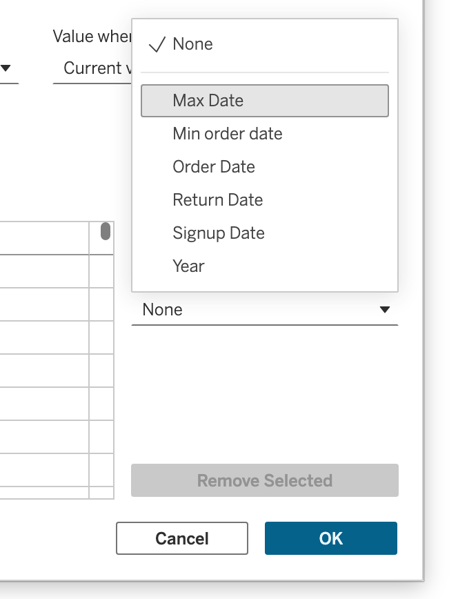